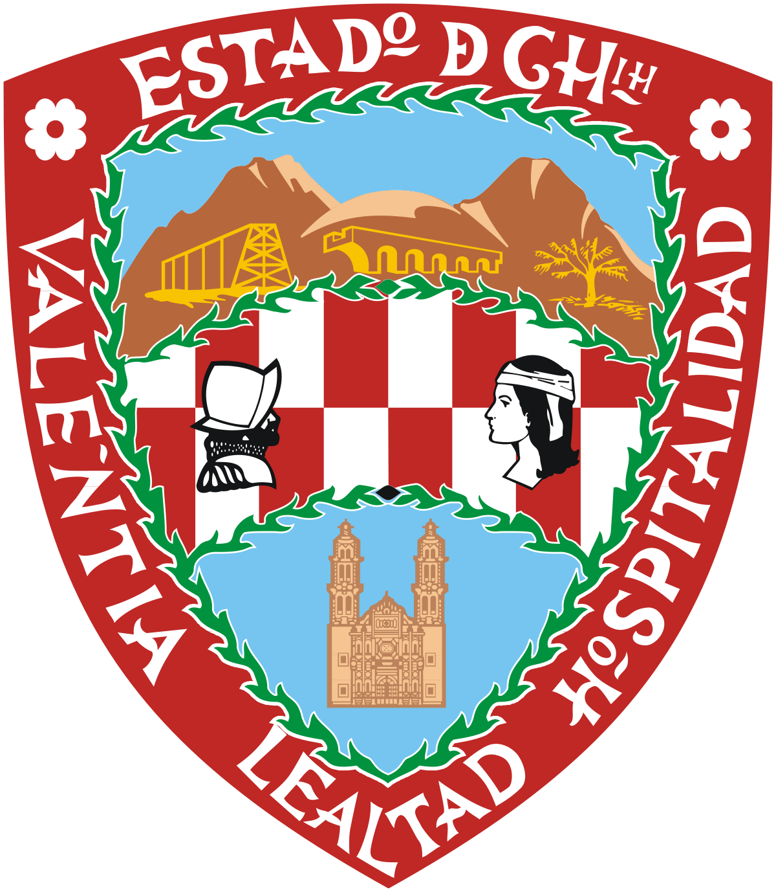
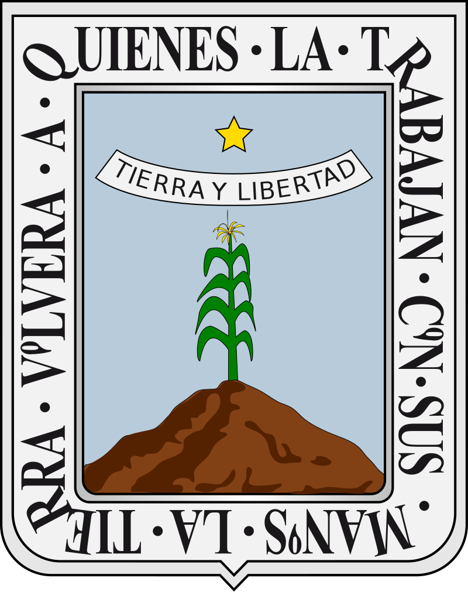
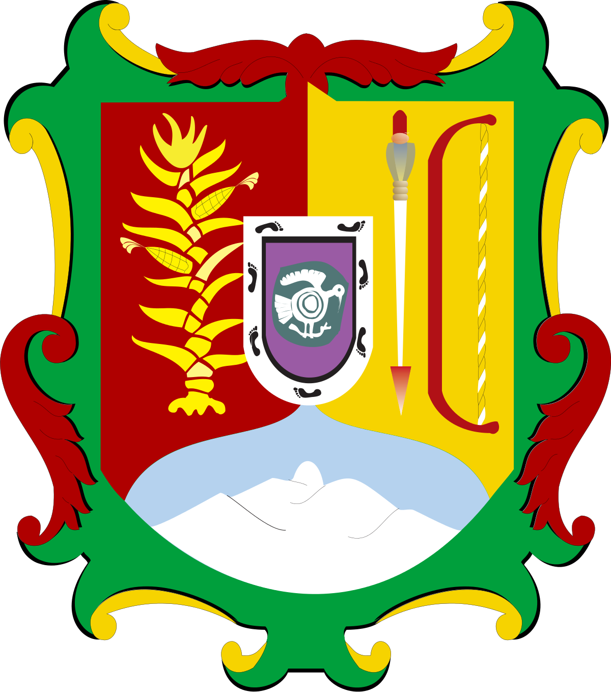
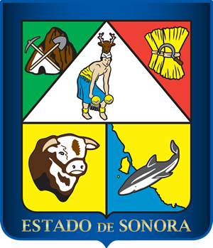
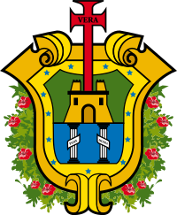

| Estado | Descripción | Escudo |
|---|---|---|
| Aguascalientes | Aguascalientes, oficialmente Estado Libre y Soberano
de Aguascalientes, es uno de los treinta y un estados que, junto con la Ciudad de México, conforman México; se ubica en la región centronorte de México y parte del Bajío mexicano.Su capital y ciudad más poblada es Aguascalientes. |
|
| Baja California | Baja California, oficialmente Estado Libre y Soberano
de Baja California, es uno de los treinta y un estados que, junto con la Ciudad de México, conforman México.Su capital es Mexicali y su ciudad más poblada es Tijuana, cabecera del municipio homónimo, el más poblado del país. |
 |
| Baja California Sur | Baja California Sur, oficialmente Estado Libre y
Soberano de Baja California Sur, es uno de los treinta y un estados que junto con la Ciudad de México conforman México. Su capital y ciudad más poblada es La Paz. Está dividido en cinco municipios. |
|
| Campeche | Campeche es uno de los treinta y un estados que,
junto con la Ciudad de México, conforman México. Su capital y ciudad más poblada es San Francisco de Campeche. Está divido en trece municipios. |
 |
| Chiapas | Chiapas, oficialmente Estado Libre y Soberano de
Chiapas, es uno de los treinta y un estados que junto con la Ciudad de México conforman México.Su capital y ciudad más poblada es Tuxtla Gutiérrez. Está dividido en ciento veinticuatro municipios. |
 |
| Chihuahua | Chihuahua, oficialmente Estado Libre y Soberano de
Chihuahua,es uno de los treinta y un estados que, junto con la Ciudad de México, conforman México.Su capital es la ciudad homónima y su ciudad más poblada es Ciudad Juárez. |
 |
| Ciudad de México | La Ciudad de México (CDMX), anteriormente
denominada Distrito Federal (D. F.), es la capital de México.Es una de las entidades federativas que, junto con treinta y un estados, conforman dicho país. Asimismo es sede de los Poderes de la Unión. Está dividida en dieciséis demarcaciones territoriales. |
|
| Coahuila de Zaragoza | Coahuila, oficialmente Estado Libre y Soberano de
Coahuila de Zaragoza, es uno de los treinta y un estados que, junto con la Ciudad de México, conforman los Estados Unidos Mexicanos.Su capital y ciudad más poblada es Saltillo. |
 |
| Colima | Colima, oficialmente Estado Libre y Soberano de
Colima, es uno de los treinta y un estados que, junto con la Ciudad de México, forman México. Su capital es la ciudad homónima y la ciudad más poblada es Manzanillo. Está dividido territorialmente en diez municipios. |
|
| Durango | Durango, oficialmente Estado Libre y Soberano de
Durango, es uno de los treinta y un estados que, junto con la Ciudad de México, conforman México. Su capital y ciudad más poblada es Victoria de Durango. Está divido en treinta y nueve municipios. |
 |
| Guanajuato | Guanajuato, oficialmente Estado Libre y Soberano de
Guanajuato, es uno de los treinta y un estados que junto con la Ciudad de México conforman México. Su capital es la ciudad homónima y su ciudad más poblada es León.Se divide en cuarenta y seis municipios. |
|
| Guerrero | Guerrero, oficialmente Estado Libre y Soberano de
Guerrero, es uno de los treinta y un estados que, junto con la Ciudad de México, conforman México.Su capital es Chilpancingo de los Bravo y su ciudad más poblada es Acapulco de Juárez. |
 |
| Hidalgo | Hidalgo, oficialmente Estado Libre y Soberano de Hidalgo,
es uno de los treinta y un estados que, junto con la Ciudad de México, conforman México.Su capital y ciudad más poblada es Pachuca de Soto. Está dividido en ochenta y cuatro municipios. |
 |
| Jalisco | Jalisco, oficialmente Estado Libre y Soberano de Jalisco,
es uno de los treinta y un estados que, junto con la Ciudad de México, conforman México.Su capital y ciudad más poblada es Guadalajara. Está divido en ciento veinticinco municipios. |
|
| Estado de México | El Estado de México,oficialmente Estado Libre y Soberano
de México, es uno de los treinta y un estados que, junto con la Ciudad de México, conforman México. Su capital es Toluca de Lerdo y su ciudad más poblada s Ecatepec de Morelos. Está divido en ciento veinticinco municipios. |
 |
| Michoacán de Ocampo | Michoacán, oficialmente Estado Libre y Soberano de
Michoacán de Ocampo, es uno de los treinta y un estados que, junto con la Ciudad de México, conforman México. Su capital y su ciudad más poblada es Morelia, antiguamente llamada Valladolid, que lleva su nombre actual en honor a José María Morelos. Está dividido en ciento trece municipios. |
|
| Morelos | Morelos, oficialmente Estado Libre
y Soberano de Morelos, es uno de los treinta y un estados que,junto con la Ciudad de México, conforman México.Su capital y ciudad más poblada es Cuernavaca. Está dividido en treinta y seis municipios. |
 |
| Nayarit | Nayarit, oficialmente Estado Libre y Soberano de Nayarit,
es uno de los treinta y un estados que, junto con la Ciudad de México, conforman México.Su capital y ciudad más poblada es Tepic. Está dividido en veinte municipios. |
 |
| Nuevo León | Nuevo León, oficialmente Estado Libre y Soberano de
Nuevo León,es uno de los treinta y un estados que, junto con la Ciudad de México, conforman México.Su capital y ciudad más poblada es Monterrey. Está dividido en cincuenta y un municipios. |
|
| Oaxaca | Oaxaca, oficialmente el Estado Libre y Soberano de
Oaxaca,es uno de los treinta y un estados que, junto con la Ciudad de México, forman México.Su capital y ciudad más poblada es Oaxaca de Juárez. Está dividido en 570 municipios,418 de los cuales se gobiernan bajo el sistema de usos y costumbres, con formas locales reconocidas de autogobierno |
|
| Puebla | Puebla, oficialmente el Estado Libre y Soberano de Puebla,
es uno de los treinta y un estados que, junto con la Ciudad de México, conforman México;ubicado en el altiplano central de México, su capital y ciudad más grande es Puebla de Zaragoza.Políticamente es un estado autónomo, democrático y laico, compuesto por 217 municipios. |
 |
| Querétaro | Querétaro, oficialmente el Estado Libre y Soberano de
Querétaro, es uno de los treinta y un estados que, junto con la Ciudad de México, forman México. Su capital y ciudad más poblada es Santiago de Querétaro. |
 |
| Quintana Roo | Quintana Roo , oficialmente el Estado Libre y Soberano de
Quintana Roo, es uno de los treinta y un estados que, junto con la Ciudad de México, conforman México.Su capital es Chetumal y su ciudad más poblada es Cancún. Está ubicado en la península de Yucatán, región sureste del país, limitando al norte con Yucatán y el golfo de México (océano Atlántico), al este con el mar Caribe (océano Atlántico), al sur con Belice y al oeste con Campeche. |
 |
| San Luis Potosí | San Luis Potosí , oficialmente llamado Estado Libre y
de San Luis Potosí, es uno de los treinta y un estados que, Soberano junto con la Ciudad de México, conforman México.Su capital y ciudad más poblada es la homónima San Luis Potosí. |
|
| Sinaloa | Sinaloa, oficialmente Estado Libre y Soberano de Sinaloa,
es uno de los treinta y un estados que, junto con la Ciudad de México, conforman México.Está ubicado en la región noroeste del país, limitando al norte con Sonora y Chihuahua,al este con Durango, al sur con Nayarit y al oeste con el golfo de California (océano Pacífico). Fue fundado el 14 de octubre de 1830. |
 |
| Sonora | Sonora, oficialmente llamado Estado Libre y Soberano de
Sonora,es uno de los treinta y un estados que, junto con la Ciudad de México, conforman México.Su capital y ciudad más poblada es Hermosillo. |
 |
| Tabasco | Tabasco, oficialmente llamado Estado Libre y Soberano de
Tabasco,es uno de los treinta y un estados que, junto con la Ciudad de México, conforman México.Su capital y ciudad más poblada es Villahermosa. |
 |
| Tamaulipas | Tamaulipas, oficialmente Estado Libre y Soberano de
Tamaulipas,es uno de los treinta y un estados que, junto con la Ciudad de México, forman los Estados Unidos Mexicanos.Su capital es Ciudad Victoria y su ciudad más poblada es Reynosa.Fue fundado el 7 de febrero de 1824. |
 |
| Tlaxcala | Tlaxcala, oficialmente el Estado Libre y Soberano de
Tlaxcala,es uno de los treinta y un estados que, junto con la Ciudad de México, conforman México.Su capital es Tlaxcala de Xicohténcatl y su ciudad más poblada, San Pablo del Monte. |
 |
| Veracruz de Ignacio de la Llave | Veracruz, oficialmente llamado Estado Libre y Soberano de
Veracruz de Ignacio de la Llave,es uno de los treinta y un estados que,junto con la Ciudad de México, conforman México.Su capital y ciudad más poblada es Xalapa-Enríquez.El nombre del estado proviene del exgobernador Ignacio de la Llave. |
 |
| Yucatán | Yucatán, oficialmente el Estado Libre y Soberano de
Yucatán,es uno de los treinta y un estados que, junto con la Ciudadde México, conforman México.Está dividido en 106 municipios, y su capital y ciudad más poblada es Mérida. |
|
| Zacatecas | Zacatecas, oficialmente llamado Estado Libre y Soberano
es uno de los treinta y un estados que, junto con la Ciudad de México, conforman México.Fue fundado el 20 de enero de 1548.Su capital es la ciudad de nombre homónimo Zacatecas. |